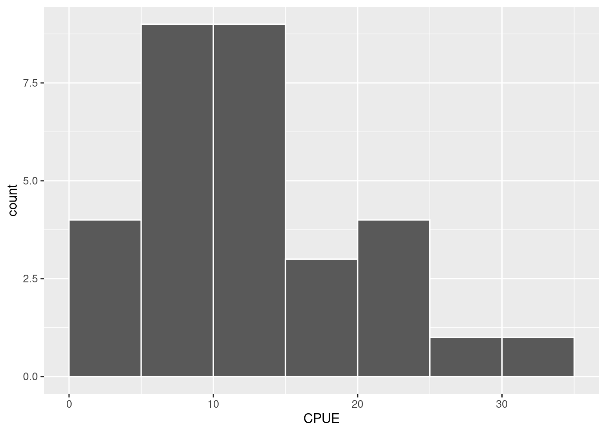

Capítulo 5 Medidas de tendência central
Tabelas de frequência e histogramas (capítulo 4) permitem a visualização dos padrões de distribuição de uma variável quantitativa, evidenciando limites inferiores e superiores, faixas de valores mais ou menos frequentes etc. Neste capítulo, veremos medidas-resumo que possibilitam descrever a tendência central de um conjunto de dados. Estas medidas são a média aritmética, a mediana, a moda e o ponto médio.
5.1 Média aritmética
Considere a variável \(X\) com \(n\) elementos \(X_1\), \(X_2\), \(X_3\), \(\cdots, X_n\). A média aritmética (\(\overline{X}\)) é dada por:
\[\overline{X}=\frac{X_1+X_2+X_3+\cdots+X_n}{n}=\frac{\sum_{i=1}^n{X_i}}{n}\]
Exemplo
Seja a variável \(X\) com 5 observações:
\(X =\) {9, 4, 7, 1, 2}
\(\overline{X}=\frac{9 + 4 + 7 + 1 + 2}{5}\)
\(\overline{X}=\frac{23}{5} = 4.6\)
obs: o símbolo \(\overline{X}\) refere-se à média aritmética de uma amostra. Na seção sobre inferência estatística (Capítulos 13 a 18) faremos distinção entre média amostral (\(\overline{X}\)) e a média populacional (\(\mu\)).
5.2 Mediana
É definida como o valor do meio de uma distribuição, de modo que metade dos valores estão abaixo e metade está acima da mediana. Se organizarmos a variável \(X\) em ordem crescente teremos:
\(X =\) {1,2 , 4 , 7,9}
sendo a mediana igual a \(4\).
Neste exemplo, temos \(n = 6\) observações. Se tivermos um número par de observações, teremos duas na posição central. Por exemplo se:
\(X =\) {9, 4, 7, 1, 2, 7}
vemos que após ordenarmos \(X\):
\(X =\) {1, 2, 4, 7, 7, 9}
teremos o \(4\) e o \(7\) como valores do meio.
Neste caso, a mediana fica como sendo:
\(\frac{4 + 7}{2} = 5.5\)
5.3 Moda
É definida como o valor mais frequente de uma distribuição.
Para \(X =\) {9, 4, 7, 1, 2, 7} a moda é 7, o valor que mais se repete na distribuição.
A moda nem sempre existe. Caso cada valor se repita uma única vez, não haverá moda.
Se vários valores repetem-se igualmente, teremos mais de uma moda na distribuição.
5.4 Ponto médio
É calculado com base nos dois valores extremos da distribuição (mínimo e máximo), sendo obtido por:
\[P_{medio}=\frac{X_{minimo} + X_{maximo}}{2}\]
Para \(X =\) {9, 4, 7, 1, 2, 7} o ponto médio é:
\(PM = \frac{1 + 9}{2} = \frac{10}{2} = 5\)
5.5 Efeito da assimetria sobre os descritores de tendência central
Cada um dos drescitores de tendência central descritos acima é mais ou menos sensível ao grau de assimetria de uma distribuiçãol. Em uma distribuição perfeitamente simétrica, onde as observações estão igualmente dispersas acima e abaixo do ponto central, os valores da média, mediana, moda e ponto médio coincidem. Por outro lado, pode ocorrer da distribuição ser assimétrica. Neste caso, a posição relativa dos descritores irá depender se a assimetria é à direita ou à esquerda. Esta discrepância ocorre devido à sensibilidade destes descritores a valores extremos na distribuição. O ponto médio é o mais sensível à presença de pontos extremos, seguido da média, mediana e a moda.
Figure 5.1: Efeito da assimetria de uma distribuição sobre o ponto médio, a média aritmética, a mediana e a moda
Média aritmética: utiliza todo o conjunto de dados. Relativamente sensível a valores extremos;
Mediana: o valor do meio. Metade dos pontos está acima e metade abaixo da mediana. A mediana é uma medida resistente a valores extremos;
Moda: valor mais frequente. Se mais de um valor aparece com a mesma frequência, os dados têm uma distribuição multimodal;
Ponto médio: considera somente o valor mínimo e máximo. O ponto médio é fácil de calcular porém não utiliza a maioria do conjunto de dados e é muito sensível a valores extremos.
5.6 Obtendo medidas de uma tabela de dados
Carregue o pacote tidyverse e importe novamente a base de dados Reservatorios_Parana_parcial.csv.
# Carrega pacotes
library(tidyverse)
# Importa base de dados
res = read_delim('Reservatorios_Parana_parcial.csv',
delim = ',',
locale = locale(decimal_mark = '.',
encoding = 'latin1'))Medidas-resumo pode ser obtidas geralmente pela função summarise
Vamos encontrar a média aritmética e a mediana da variável CPUE.
res %>%
summarise(CPUE_medio = mean(CPUE),
CPUE_mediana = median(CPUE))| CPUE_medio | CPUE_mediana |
|---|---|
| 12.70097 | 11.74 |
Os valores são parecidos, porém a média é um pouco superior. Provavelmente a distribuição deva ser ligeiramente assimétrica à direita. Podemos verificar isto por meio de um histograma de disdribuição:

Neste caso, alguns valores de captura próximos a \(30\) kg estão fazendo com que a média esteja um pouco acima da mediana.
Vamos verificar agora a média e a media da Area dos reservatórios:
res %>%
summarise(CPUE_medio = mean(Area, na.rm = TRUE),
CPUE_mediana = median(Area, na.rm = TRUE))| CPUE_medio | CPUE_mediana |
|---|---|
| 64.7369 | 12 |
Para esta variável a discrepância é muito maior e a causa disto pode ser compreendida observando o histograma da distribuição.
obs: tivemos que utilizar o argumento na.rm = TRUE para excluir do cálculo reservatórios com dados faltantes para Area.
cl_area = seq(0, 500, by = 50)
ggplot(res, aes(x = Area)) +
geom_histogram(breaks = cl_area, color = 'white')Existe uma grande concentração de reservatórios com área até \(50\) \(km^2\), porém poucos reservatórios muito grandes com mais de \(200\) \(km^2\). Este valores deslocam a média aritmética à direita.
Podemos ver quem são estes reservatórios utilizando a função filter
res %>%
filter(Area >= 200) %>%
select(Reservatorio, Area)| Reservatorio | Area |
|---|---|
| Salto Santiago | 208.0 |
| Capivara | 419.3 |
| Chavantes | 400.0 |
| Rosana | 220.0 |
Vemos que dentro os 31 temos 4 com área acima de \(200\) \(km^2\), os reservatórios de Salto Santiago, Capivara, Chavantes, Rosana.
A influência destes reservatórios é maior para a média aritmética que é mais sensível a valores extremos, do que para a mediana. Se calcularmos o ponto médio, veremos que esta influência é ainda maior.
res %>%
summarise(CPUE_medio = mean(Area, na.rm = TRUE),
CPUE_mediana = median(Area, na.rm = TRUE),
P_medio = sum(range(Area, na.rm = TRUE))/2)| CPUE_medio | CPUE_mediana | P_medio |
|---|---|---|
| 64.7369 | 12 | 209.685 |